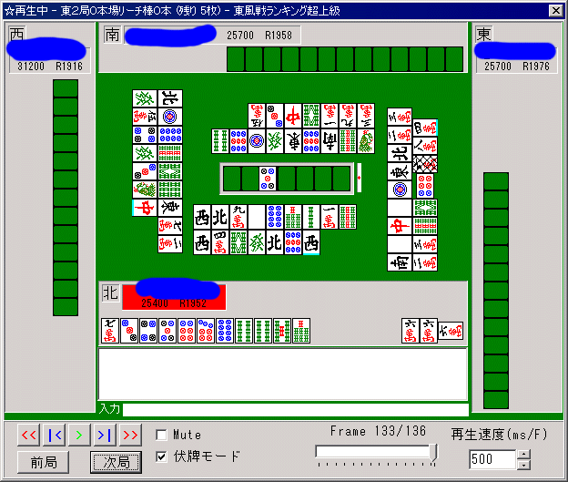

モデル評価試験
モデルの検証のために人間の読みとコンピュータの読みを比較する。
みなさん、データが必要ですのでなにとぞご協力お願いします。
点数上位３名にできすぎくんの鍵をプレゼントします。
（ちなみに、割と運のみなのであんまり時間をかけても意味ないです。変に考えすぎるとデータとして有効でなくなるおそれがあるので、いつも通りの読み方で普通に解答してね 笑）
この試験の答案は totutohoku@hotmail.com にメールするか、掲示板にカキコしてください。問題は７問あります。必ず７つの解答をしているか確認しましょう。
全部に答えなければデータにできませんので、１問でも答えを書いていないとどんなに高得点であっても無効になります。今のところ締め切りは１月いっぱいとします。
問題：指定された他家の当たり牌を読め。
以下の説明をよく読んで理解してからよろしく。
問題で指定された他家に対して「危ない順に８つ」当たり牌と思う牌を指定する。
当たり牌が的中した時、指定された順が早ければ早いほど点数が高い（８点・７点・・・・０点、的中しない場合減点）。
もし1-4-7待ちなら、例えば471のように予測して全て当たれば得点は３倍近く入るので、そのことに留意して回答すること。
問１
リーチ者の当たり牌を読め。危険な順に８牌指定せよ。
問２
リーチ者の当たり牌を読め。危険な順に８牌指定せよ。
問３・４

リーチ者の当たり牌と、ダマでテンパイしているトイメンの当たり牌をそれぞれ別々に読め。
回答は、リーチ者への当たり牌８つ、トイメンへの当たり牌８つ、別々に記述せよ（もちろん、同じ牌がかぶっても良い）。
（どちらがどちらの答えかわかるように書いてね）
問５
ダマでテンパイしている南家の当たり牌を読め。危険な順に８牌指定する。
問６問７

リーチしている２家の当たり牌を読め（南家と北家です、北家はちょうどリーチするところ）。
いずれのリーチにも、それぞれ８牌ずつの危険牌を指定する（もちろんだぶっても良い）。
（どちらがどちらの答えかわかるように書いてね）
解答は totutohoku@hotmail.com メールか、http://www7.jp-bbs.com/470/board.cgi?room=totu 掲示板などによろしく。